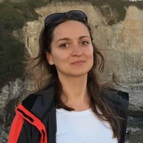

Fairness Track at
TREC
2019
TREC 2019 will feature a track on fairness in information retrieval. Watch this space for more details; data and metrics will be coming in May 2019.
Join the Google Group
Follow us on Twitter
Organizers

Asia Biega
Max Planck Institute for Informatics
Fernando Diaz
Fairness, Accountability, Transparency, and Ethics (FATE)
Microsoft Research
Michael Ekstrand
People and Information Research Team (PIReT)
Boise State University